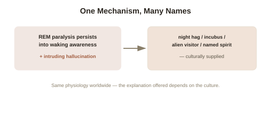

Chapter 2: Sleep Paralysis — the Everyday Trigger
Chapter 1 briefly mentioned that many spontaneous OBE reports happen right at the edge of sleep. This connection is worth taking seriously in its own right, because sleep paralysis — a distinct, well-studied physiological state — turns out to be one of the most common real-world triggers for exactly the kind of experience this topic covers, and its own mechanism is unusually well understood for something that feels, to the person experiencing it, so thoroughly uncanny.
What's actually happening physiologically
Sleep paralysis occurs when a person becomes consciously aware while the muscle paralysis that normally accompanies REM sleep — a genuine, adaptive mechanism that ordinarily prevents the body from physically acting out dreams — hasn't yet switched off, or switches back on, around the transition into or out of sleep. The result is a person who is, by every meaningful measure, awake and consciously aware, but who cannot move any voluntary muscle, often for anywhere from several seconds to a couple of minutes. This alone is disorienting enough, but sleep paralysis is very frequently accompanied by vivid, REM-sleep-quality hallucinatory content bleeding directly into the waking, paralyzed state — including, in a substantial share of documented cases, the specific sensation of a presence in the room, pressure on the chest, and a felt separation from or floating above the physical body, matching this topic's core subject matter closely.
Why the hallucinatory content is so consistent across unrelated cultures
Sleep paralysis episodes show a strikingly consistent structure across cultures with no historical contact or shared folklore — a felt sense of a malevolent presence, chest pressure, and paralysis-with-awareness recur reliably whether the tradition interpreting the experience is medieval European (the "night hag" or incubus/succubus legends, and the very word "nightmare" originally referring to this specific kind of night-visiting entity, not bad dreams generally), West African, East Asian, or many others independently. This consistency is itself informative: it suggests the raw physiological event — REM-state muscle paralysis combined with intruding REM-type hallucinatory content — is a shared, universal human neurological experience, while the specific cultural interpretation layered on top of it (a demon, a hag, an alien visitor in some modern Western accounts, a specific named spirit in other traditions) is exactly the kind of culturally-supplied explanatory content that gets applied to strange, otherwise unexplained bodily and perceptual events, echoing this library's general pattern of a shared underlying mechanism dressed in locally available cultural narrative.

Why this connects directly to Chapter 1's TPJ mechanism
Sleep paralysis's link to felt bodily separation gives Chapter 1's temporoparietal junction finding a plausible, everyday-life trigger, distinct from Blanke's direct electrical stimulation in a clinical setting. The REM state itself involves substantial disruption to normal, coordinated sensory integration — vestibular signals (balance and spatial orientation), visual imagery, and bodily proprioception are all being generated or processed in unusual, dream-characteristic ways during REM, rather than through their normal, externally-anchored waking channels. A brief period of conscious awareness arising in the middle of this altered sensory-integration state, precisely the job Chapter 1 identified as the TPJ's normal responsibility, offers a coherent, physiologically grounded account of why bodily-location confusion — the core OBE sensation — would be especially likely to arise specifically at this sleep-wake boundary, without requiring anything beyond ordinary (if unusual) brain physiology to explain it.
How common this actually is, and what predicts it
Large-scale surveys estimate that a substantial minority of people — commonly cited figures run somewhere around 8% of the general population, with meaningfully higher rates among people with irregular sleep schedules, certain anxiety disorders, and specifically among people who sleep on their backs — experience at least one episode of sleep paralysis in their lifetime, making it a genuinely common, not rare, phenomenon once actually surveyed directly, despite how isolated and singular it tends to feel to the person going through it. Sleep deprivation and disrupted sleep schedules are among the most consistently identified triggers, which gives this chapter a direct, practical takeaway distinct from the purely explanatory one: the same everyday factors that disrupt healthy REM sleep more broadly measurably increase the odds of an episode.
Try this
Ideas for noticing or testing this in your own life.
- If you've ever experienced sleep paralysis, revisit the memory with this chapter's mechanism in mind — notice whether the specific content (a presence, pressure, floating) matches the cross-cultural pattern described here.
- Notice your own sleep schedule's consistency this week — irregular sleep and sleep deprivation are among the most reliable known triggers, a concrete, low-cost way to reduce episode likelihood if they're troubling you.
Worth pulling on?
A few loose threads from this chapter — if any of these genuinely grab you, that's a good sign of where to go next.
- Chapter 1 already established that no controlled test has found evidence for genuine, verifiable perception during an OBE — but the strongest, most direct versions of those tests deserve their own close look. → The subject of the next chapter: controlled studies testing the "veridical perception" claim directly.
- Sleep paralysis sits at the same sleep-wake boundary where lucid dreaming techniques deliberately try to insert conscious awareness — using a very different, trained approach to a related transitional state. → Already in the library: Lucid Dreaming covers that deliberate approach directly.